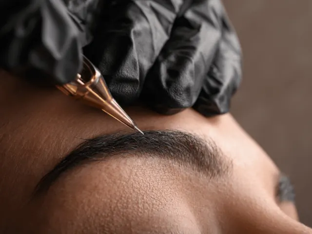
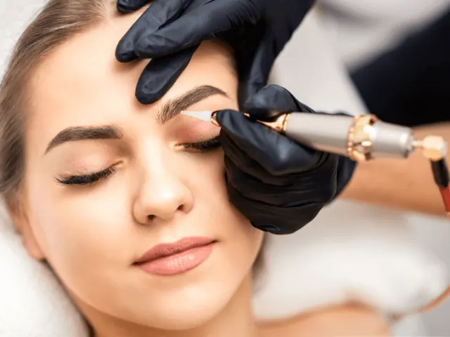

Partnerbijdrage
De techniek achter permanente make-up onthuld!
Gepubliceerd op 15 september 2023, bijgewerkt op 26 februari 2024
Onderdeel van de gids Permanente make-up in Nijmegen

Welkom in de wonderbaarlijke wereld van permanente make-up! Je hebt vast wel eens gehoord van deze speciale techniek die ervoor zorgt dat je altijd flawless en ready-to-go bent. Maar hoe werkt het eigenlijk? Het is als het beste recept uit grootmoeders kookboek, met een vleugje moderne technologie. In deze blog gaan we dieper in op het proces en onthullen we de geheimen van het zetten van permanente make-up. Dus pak je virtuele schort en laten we samen een kijkje nemen achter de schermen!
De canvasvoorbereiding: Consultatie en huidanalyse
Voordat de pannen op het vuur mogen, is er een belangrijke stap: de consultatie en huidanalyse. Dit is als de chef-kok die zorgvuldig de ingrediënten selecteert voordat hij aan het koken gaat. Tijdens de consultatie bespreek je met de professional je wensen en verwachtingen. Daarna volgt een grondige huidanalyse om de conditie van je huid te beoordelen. Dit is van cruciaal belang, want elke huid is uniek en vereist speciale aandacht. Net zoals je wilt dat de ingrediënten perfect bij elkaar passen, moet ook de permanente make-up afgestemd worden op je huidtype en kleur. Dit helpt om de beste resultaten te bereiken en er een smakelijk eindresultaat van te maken.
De kunstenaar aan het werk: De procedure van permanente make-up
Nu wordt het tijd om plaats te nemen in de stoel en het kunstwerk te laten creëren. De permanente make-up professional is als een ware kunstenaar die met precisie en vakmanschap te werk gaat. Met behulp van geavanceerde apparatuur en steriele naalden worden de pigmenten voorzichtig onder de huid aangebracht. Dit proces kan variëren, afhankelijk van de gekozen behandeling. Of je nu gaat voor prachtige wenkbrauwen, sensuele lippen of verleidelijke eyeliner, elke stap wordt met zorg uitgevoerd om je gewenste look te bereiken. Net zoals een chef zijn culinaire meesterwerk gefaseerd tot stand laat komen, zal de permanente make-up artiest met precisie en passie aan het werk gaan om je te laten stralen.

Een vleugje nazorg: Langer genieten van je permanente make-up
Na het zetten van permanente make-up is nazorg essentieel om ervoor te zorgen dat je zo lang mogelijk kunt genieten van je prachtige look. Denk aan het vermijden van direct zonlicht, het toepassen van speciale crèmes en het volgen van de instructies van de professional. Nazorg is als het laten rusten van een heerlijk gerecht voordat je het serveert, zodat de smaken zich kunnen ontwikkelen en versterken. Het is belangrijk om geduld te hebben en de tijd te nemen om je huid te laten herstellen. Met de juiste nazorg zal je permanente make-up langdurig en stralend blijven, waardoor je altijd klaar bent om de wereld te veroveren.

Welke chef mag je permanent verblijden in Nijmegen?
Diva’s permanente make-up Studio by Desi
Bij Diva’s Studio kun je rekenen op de artistieke vaardigheden van Desi, die prachtige wenkbrauwen, verleidelijke eyeliner en sensuele lippen creëert. Klanten waarderen haar aandacht voor detail en gevoel voor esthetiek. Een klant zei: “Ze is super, heeft een hele vaste hand en neemt de tijd om de perfecte wenkbrauwen te creëren.”
Sure Beauty
Bij Sure Beauty kun je terecht voor professionele permanente make-up behandelingen, waaronder prachtige wenkbrauwen, verleidelijke eyeliner en sensuele lippen. Klanten waarderen de nauwkeurigheid en het oog voor detail van het team. Een tevreden klant deelde: “Sure Beauty is heel vakkundig en professioneel en geeft goed advies.”
Salon-Chic
Salon-Chic staat bekend om hun vriendelijke service en expertise in het creëren van prachtige wenkbrauwen, verleidelijke eyeliner en sensuele lippen. Klanten voelen zich meteen op hun gemak en zijn onder de indruk van het resultaat. Een review vermeldde: “Ik ben zo blij met mijn permanente lippen bij Salon-Chic. Het team is zo professioneel en het eindresultaat is fantastisch!”
Dorien.nl
Bij Dorien.nl kun je een warme en ontspannen ervaring verwachten, waarbij het team gespecialiseerd is in het creëren van prachtige wenkbrauwen, verleidelijke eyeliner en sensuele lippen. Een klant deelde: “Ik ben echt dol op mijn permanente wenkbrauwen van Dorien.nl! Ze zien er zo natuurlijk uit en passen perfect bij mijn gezicht.”
Een vleugje magie, een dosis vakmanschap: Permanente make-up onthuld
Het zetten van permanente make-up is als het bereiden van een heerlijk gerecht: het vereist de juiste ingrediënten, een ervaren chef en een vleugje magie. Met een zorgvuldige consultatie, een precieze procedure en de juiste nazorg kun je moeiteloos genieten van een prachtige look die lang meegaat. Dus laat je betoveren door de wereld van permanente make-up en omarm je natuurlijke schoonheid!